1. Misi: Pekan Gaduh SIPINTAR
SMP Bahari (rekaan) punya portal SIPINTAR. Dalam satu minggu terjadi lima insiden. Kamu dan timmu diminta Pak Rudi (admin TI, rekaan) mencari penyebabnya dan menulis Kebijakan Sandi baru.
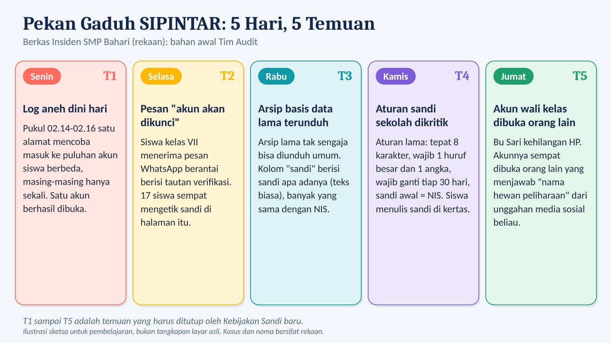
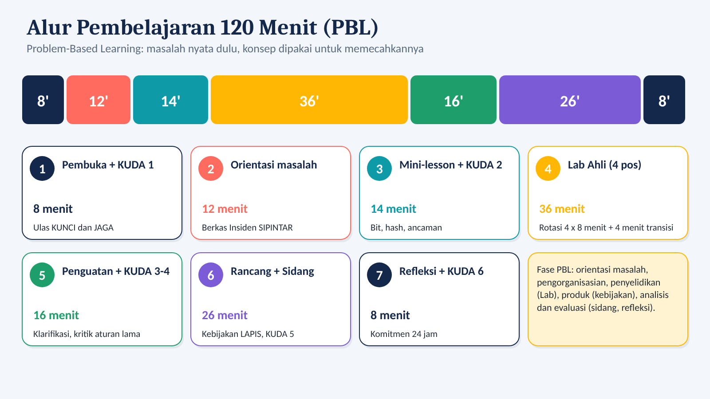
2. Senjata 1: Bit
bit = panjang × log2(pilihan). Tambah 1 bit, ruang tebakan jadi 2 kali lipat.
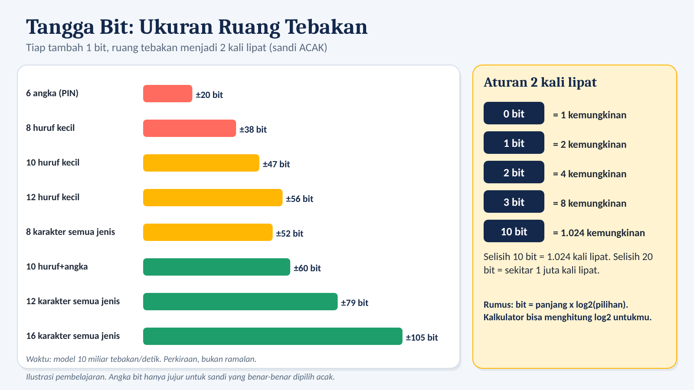
Kalkulator bit
Bit:
Waktu coba semua (model 10 miliar tebakan/detik, sandi acak):
Passphrase dari dadu
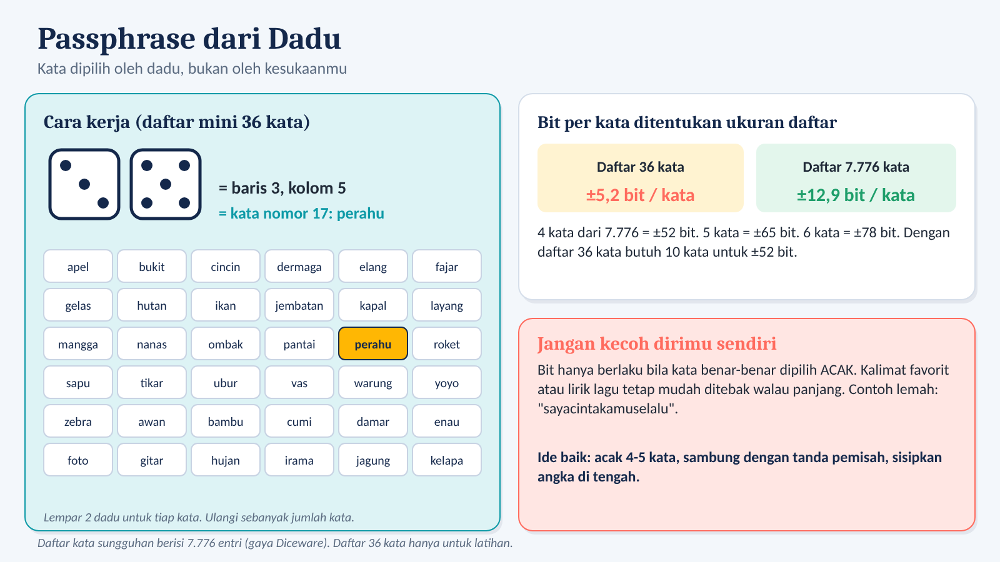
Pembuat passphrase latihan (daftar 36 kata)
-
Hanya latihan. Daftar 36 kata hanya ±5,2 bit per kata; daftar sungguhan 7.776 kata memberi ±12,9 bit per kata. Jangan pakai hasil ini untuk akun aslimu.3. Senjata 2: Hash dan Salt
Server tidak menyimpan sandimu. Ia menyimpan hash, sidik jari satu arah. Saat login, server membuat hash dari yang kamu ketik lalu membandingkannya.
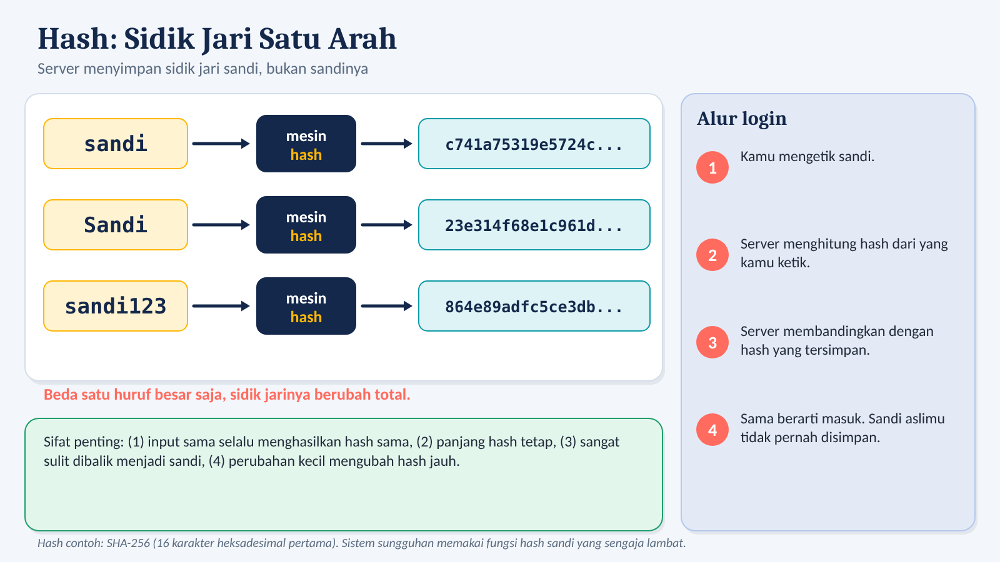
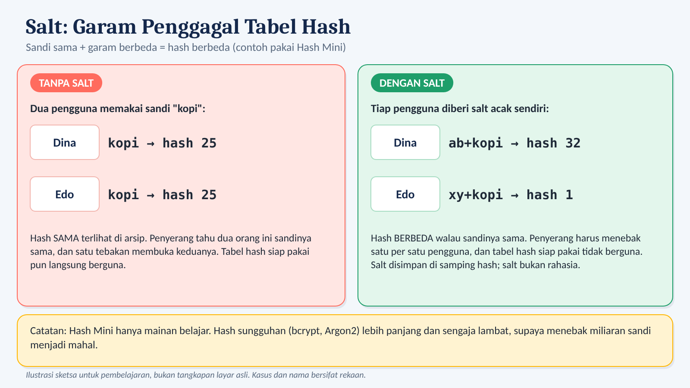
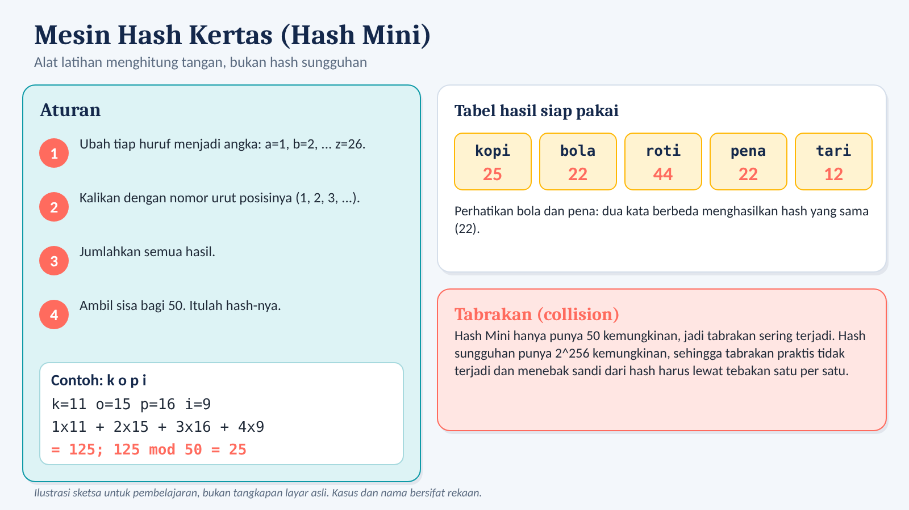
Mesin Hash Mini (mainan belajar)
Aturan: huruf → angka (a=1..z=26), kali nomor posisi, jumlahkan, sisa bagi 50. Hanya huruf kecil a-z.
Langkah: -
Hash Mini: -
Coba: kopi = 25; bola dan pena sama-sama 22 (tabrakan); ab+kopi = 32; xy+kopi = 1. Hash Mini cuma mainan; hash sungguhan jauh lebih panjang dan sengaja lambat.4. Senjata 3: Detektif Log
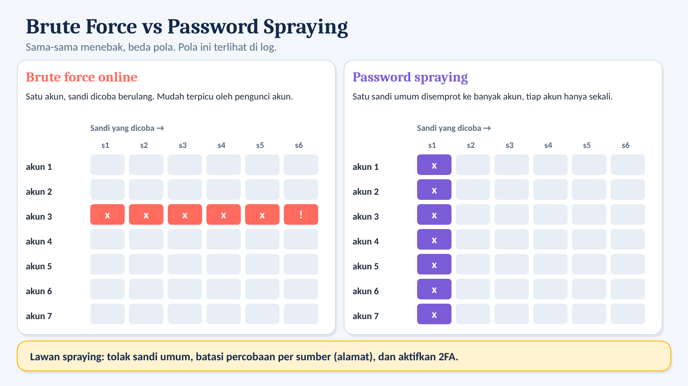
Mini game: klasifikasikan pola log
Log rekaan (alamat memakai blok dokumentasi). Pilih pola untuk tiap kelompok baris.
5. Senjata 3b: Baca Alamat
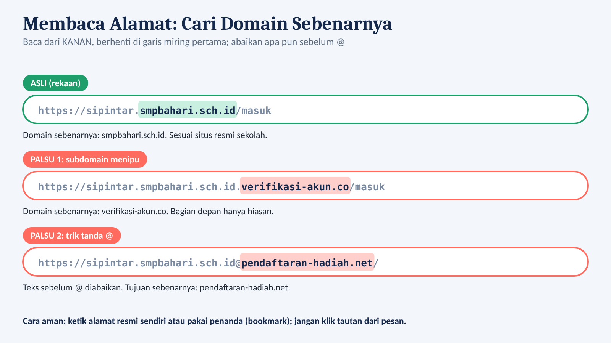
Mini game: asli atau palsu?
Situs asli SIPINTAR ada di domain smpbahari.sch.id (rekaan).
6. Senjata 4: 2FA dan Pemulihan
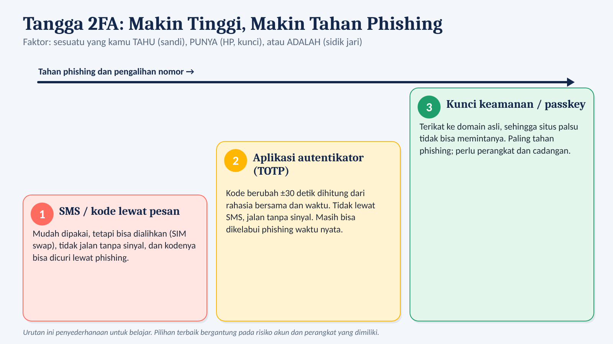
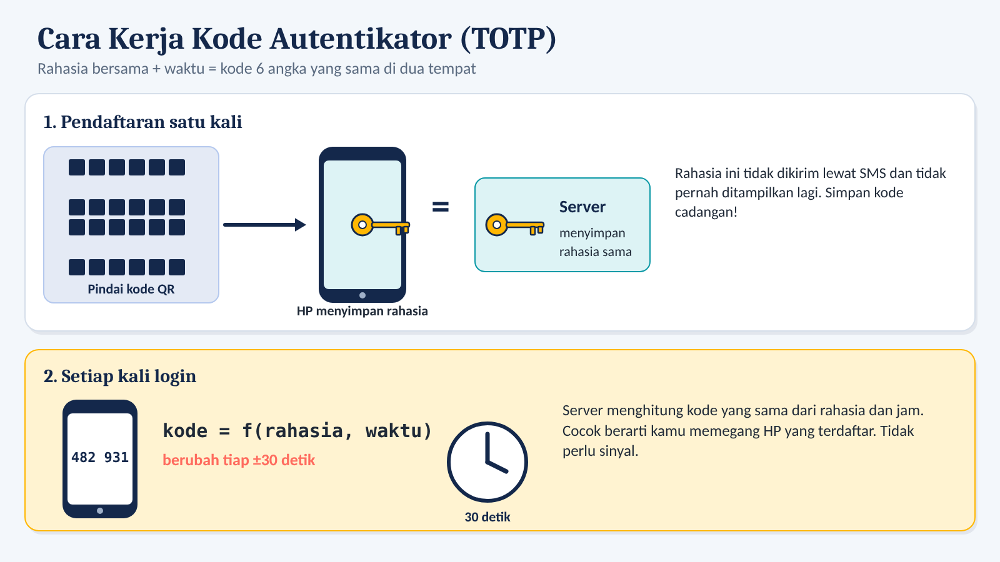
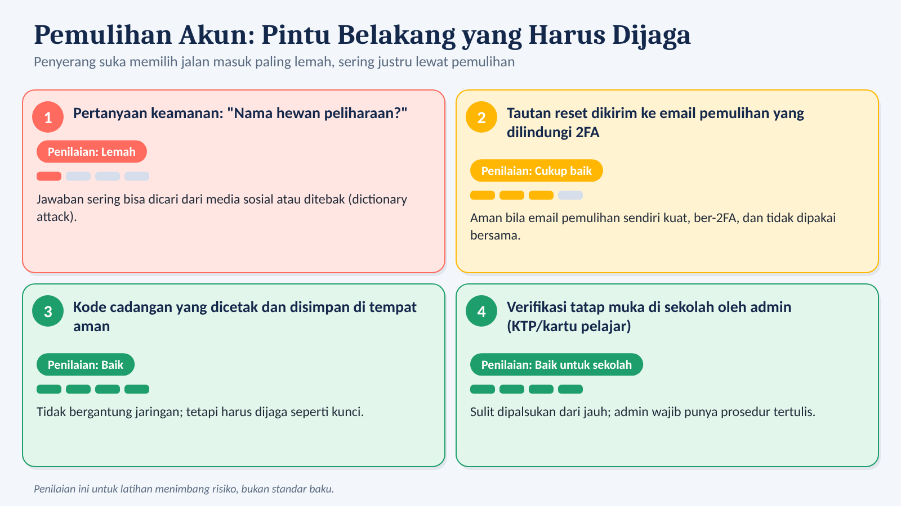
Pilih 2FA yang pas
7. Membangun benteng: LAPIS
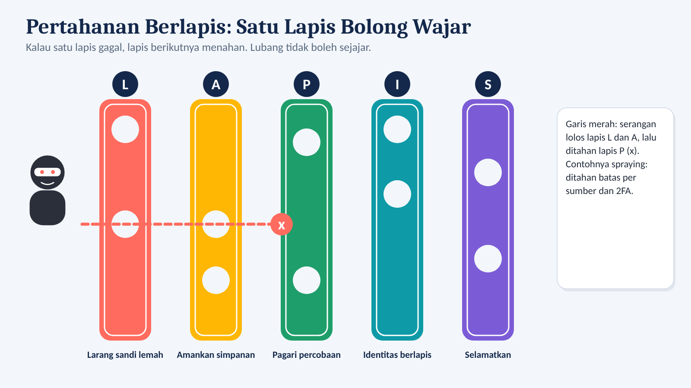
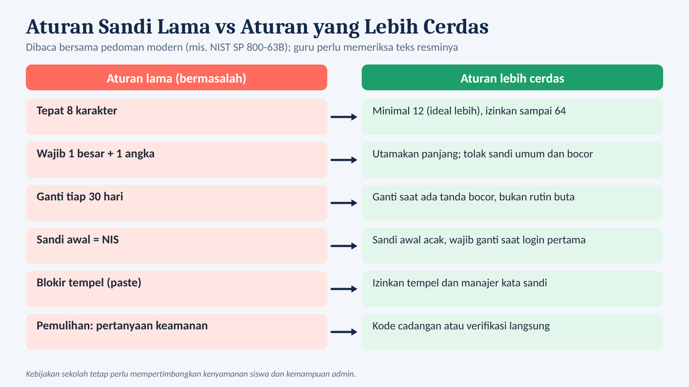
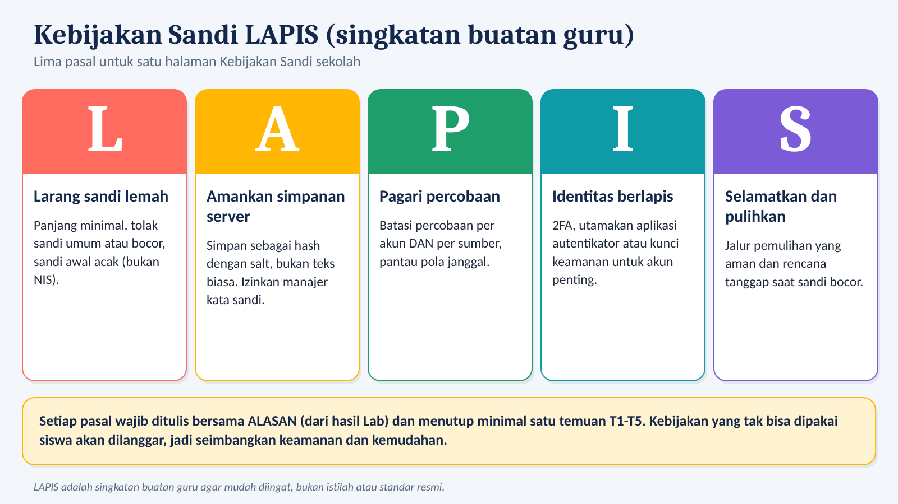
| Pasal | Isi |
|---|---|
| L Larang sandi lemah | Panjang minimal, tolak sandi umum atau bocor, sandi awal acak (bukan NIS). |
| A Amankan simpanan server | Simpan sebagai hash dengan salt, bukan teks biasa. Izinkan manajer kata sandi. |
| P Pagari percobaan | Batasi percobaan per akun DAN per sumber, pantau pola janggal. |
| I Identitas berlapis | 2FA, utamakan aplikasi autentikator atau kunci keamanan untuk akun penting. |
| S Selamatkan dan pulihkan | Jalur pemulihan yang aman dan rencana tanggap saat sandi bocor. |
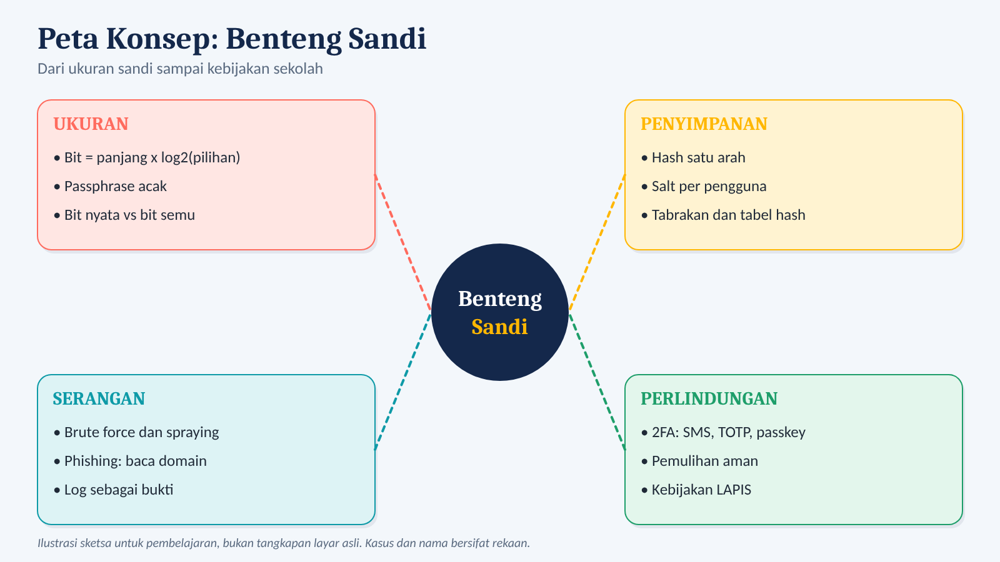